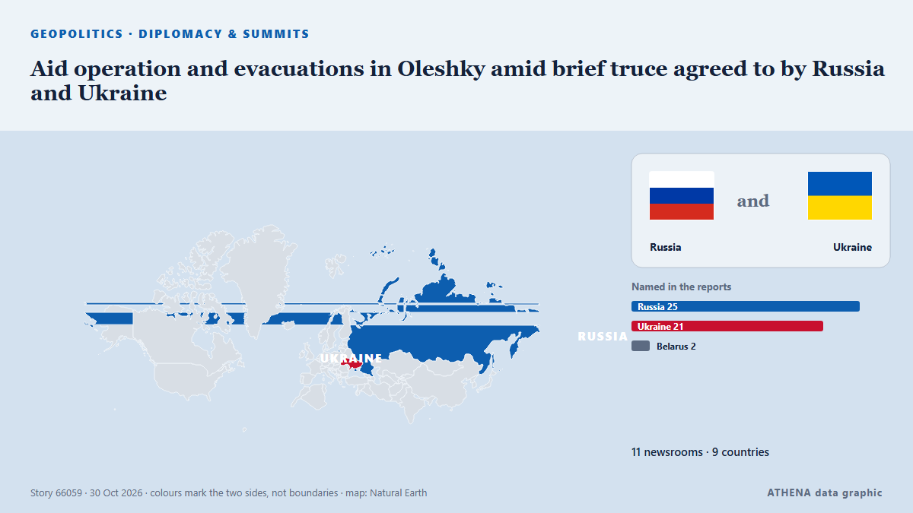

Aid operation and evacuations in Oleshky amid brief truce agreed to by Russia and Ukraine

A humanitarian mission entered the devastated city of Oleshky on Friday, officials said, as Russia and Ukraine observed the most significant truce of the 4½-year war that began with Moscow's… из PBS NewsHour World
Независимые источники: 12 изданий в 9 странах, с 30 окт.; первым сообщил The Irish News (Belfast); освещение идёт на спад. ATHENA оценивает риск как повышенный (4.9/10), прежде всего из-за тяжести описываемого ущерба и географического и отраслевого охвата. Уверенность — 89 % (высокая); подтверждают независимые источники: 12 изданий, средняя надёжность источников — 78 %. Кто сообщал: 2 СМИ в стране Соединенные Штаты · United States, 2 СМИ в стране Украина · Ukraine, 2 СМИ в стране Турция · Turkey. Освещение шло с 30 окт. по 31 окт., 27 ч.
Почему это важно: Полномасштабное вторжение России в Украину началось в феврале 2022 года. Мониторинг следит за боевыми действиями, ударами по инфраструктуре и дипломатией вокруг войны так, как их освещает мировая пресса.
Что изменилось: 11 новых сообщений от 10 редакций за 24 часа до 31 окт..
Первый заголовок: Evacuation begins from besieged Oleshky amid truce
Заголовки приводятся на английском языке, как они были опубликованы.
Коротко в цифрах
Отобрано, оценено и написано по опубликованной методологии ATHENA. Ни один редактор не вмешивается в отдельные события. Как это создаётся ›
| 30 Oct 10:12 UTC | 1 |
|---|---|
| 30 Oct 11:12 UTC | 0 |
| 30 Oct 12:12 UTC | 1 |
| 30 Oct 13:12 UTC | 2 |
| 30 Oct 14:12 UTC | 4 |
| 30 Oct 15:12 UTC | 0 |
| 30 Oct 16:12 UTC | 0 |
| 30 Oct 17:12 UTC | 0 |
| 30 Oct 18:12 UTC | 2 |
| 30 Oct 19:12 UTC | 1 |
| 30 Oct 20:12 UTC | 0 |
| 30 Oct 21:12 UTC | 0 |
| 30 Oct 22:12 UTC | 0 |
| 30 Oct 23:12 UTC | 1 |
| 31 Oct 00:12 UTC | 0 |
| 31 Oct 01:12 UTC | 0 |
| 31 Oct 02:12 UTC | 0 |
| 31 Oct 03:12 UTC | 0 |
| 31 Oct 04:12 UTC | 0 |
| 31 Oct 05:12 UTC | 0 |
| 31 Oct 06:12 UTC | 0 |
| 31 Oct 07:12 UTC | 0 |
| 31 Oct 08:12 UTC | 0 |
| 31 Oct 09:12 UTC | 0 |
| 31 Oct 10:12 UTC | 0 |
| 31 Oct 11:12 UTC | 0 |
| 31 Oct 12:12 UTC | 1 |
| 30 Oct 10:49 UTC | 0.0 |
|---|---|
| 30 Oct 12:58 UTC | 1.1 |
| 30 Oct 14:00 UTC | 1.8 |
| 30 Oct 15:06 UTC | 2.7 |
| 30 Oct 18:42 UTC | 4.4 |
| 30 Oct 19:24 UTC | 5.0 |
| 31 Oct 13:04 UTC | 4.9 |
Откуда эти цифры
Значимость
Риск
Уверенность
Освещение — кто сообщил и когда
заголовок в оригинале · открывает источник- The Irish News (Belfast) · Великобритания · United KingdomResidents evacuated from Russia-occupied Oleshky, lawmaker says
- RTÉ News · Ирландия · IrelandEvacuation begins from besieged Oleshky amid truce
- PBS NewsHour World · Соединенные Штаты · United StatesAid operation and evacuations in Oleshky amid brief truce agreed to by Russia and Ukraine
- RFE/RL (English) · INTEvacuations, Humanitarian Mission Begin In Russian-Occupied Ukrainian City Of Oleshky
- ABC News (International) · Соединенные Штаты · United StatesBrief truce agreed by Russia and Ukraine allows aid operation in Oleshky
- Al Jazeera English · Катар · QatarRussian, Ukrainian humanitarian officials enter Oleshky
- Stuff · Новая Зеландия · New ZealandBrief Russia-Ukraine truce facilitates evacuations from and aid deliveries to Oleshky
- Ukrainska Pravda (English) · Украина · UkraineEvacuees from Oleshky head to Russia before flying to Belarus – video
- Anadolu Agency (English) · Турция · Turkey2 people killed in demining operations in Russia-controlled Ukrainian city of Oleshky
- Xinhua (English) — page reader · Китай · ChinaUrgent: Humanitarian mission in Oleshky completed: Russian official
- DW English · Германия · GermanyUkraine: Oleshky residents evacuate war-ravaged city
- Anadolu Agency (English) · Турция · TurkeyMoscow says humanitarian mission in Oleshky completed
- Kyiv Independent · Украина · UkraineOleshky residents reach Ukrainian-controlled territory after escaping Russian occupation